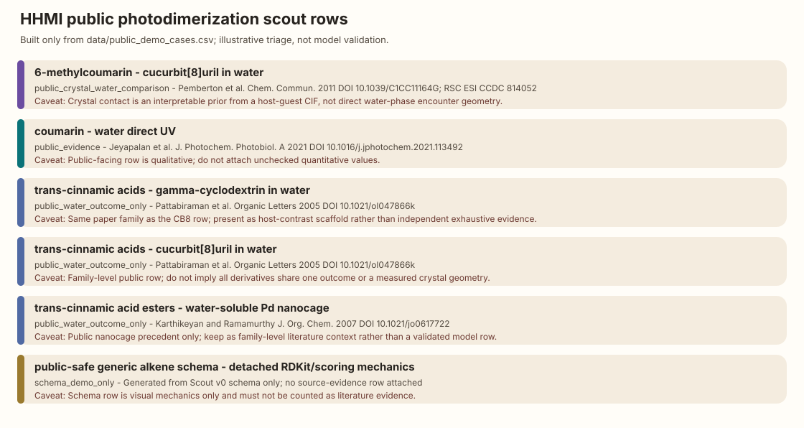

HHMI Proof Artifact
Photodimerization-in-Water Scout
A small public-safe computational chemistry loop that turns literature/demo rows into transparent triage, caveats, and next source checks.
What It Shows
A runnable scientific triage loop, not an overclaimed model.
Evidence in
Public literature/context rows are loaded from data/public_demo_cases.csv.
Caveats preserved
Every row keeps source boundaries and next checks visible.
Experiment logic out
The scout produces an illustrative order, explanation cards, and a visual table.
Public Demo Rows
Generated table

Run
Rebuild the public outputs
From the repository root, run python3 scripts/run_public_scout.py. The script uses only the Python standard library and rewrites the public CSV, cards, and SVG from the public demo table.